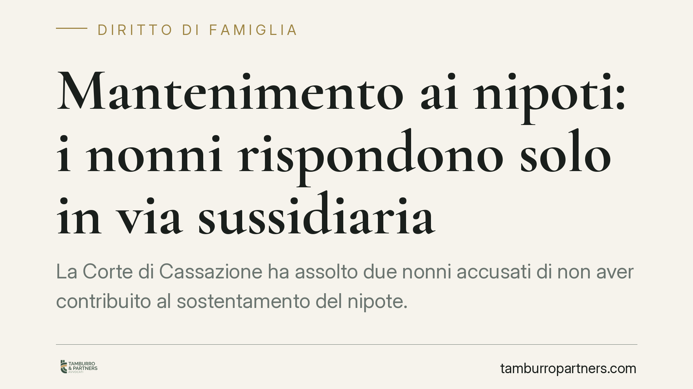

Mantenimento ai nipoti: i nonni rispondono solo in via sussidiaria
La Corte di Cassazione ha assolto due nonni accusati di non aver contribuito al sostentamento del nipote. Il principio è netto: l'obbligo verso i figli minori grava in via primaria ed esclusiva sui genitori. L'intervento degli ascendenti è meramente sussidiario e presuppone la prova rigorosa dello stato di bisogno del minore e dell'incapacità economica di entrambi i genitori.

Il caso
Due nonni venivano chiamati a rispondere penalmente per non aver provveduto alle esigenze del nipote minore, in una situazione in cui il padre risultava disoccupato. La tesi accusatoria muoveva da un presupposto ricorrente: se il genitore non paga, l'obbligo si trasferirebbe automaticamente sugli ascendenti.
La Corte di Cassazione, Sezione VI Penale, ha ribaltato questa impostazione, assolvendo i nonni. La pronuncia ribadisce un principio consolidato in materia di rapporti tra le generazioni.
*Nota redazionale: al momento della pubblicazione non risultano confermati gli estremi definitivi della sentenza (numero e anno). Il principio di diritto qui illustrato riflette l'orientamento costante della giurisprudenza di legittimità; per il riferimento puntuale della decisione si rinvia alla consultazione diretta della massima ufficiale.*
Due obblighi da non confondere
Il nodo giuridico è la distinzione tra due istituti che il linguaggio comune tende a sovrapporre.
Il mantenimento (artt. 147 e 315-bis del codice civile) è l'obbligo dei genitori di provvedere a istruire, educare e assistere i figli in proporzione alle proprie capacità e in funzione delle esigenze di crescita. È un dovere ampio, che copre il tenore di vita del minore, e grava in via primaria ed esclusiva su padre e madre.
Gli alimenti (art. 433 del codice civile) sono cosa diversa. Consistono in ciò che è strettamente necessario alla sopravvivenza di chi versa in stato di bisogno e non è in grado di provvedere a sé. La legge individua una precisa graduatoria di obbligati: il coniuge, i figli, i genitori e — solo a seguire — gli ascendenti, tra cui i nonni.
È qui il punto: i nonni non sono tenuti al *mantenimento* del nipote, ma possono essere tenuti agli *alimenti*, e solo quando ne ricorrano i presupposti.
Il profilo penale della contestazione
Sul piano penale occorre chiarezza sul titolo della contestazione. L'art. 570 del codice penale punisce chi si sottrae agli obblighi inerenti alla responsabilità genitoriale o alla qualità di coniuge (la terminologia "potestà genitoriale" è superata dal D.Lgs. 154/2013). L'art. 570-bis c.p. sanziona in particolare l'omesso versamento dell'assegno stabilito in sede di separazione o divorzio.
I nonni non rivestono la qualità di genitori né di coniugi rispetto al nipote: la loro eventuale responsabilità penale può fondarsi soltanto sulla violazione dell'obbligo alimentare ex art. 433 c.c., quando questo sia stato accertato e reso esigibile. In assenza di tale accertamento, la contestazione resta priva di base.
Perché la disoccupazione del padre non basta
La disoccupazione di un genitore non trasferisce l'obbligo sui nonni in modo automatico. Perché scatti il dovere alimentare degli ascendenti occorre provare, con rigore, due elementi cumulativi:
- lo stato di bisogno effettivo del minore, cioè l'impossibilità di soddisfare i bisogni essenziali;
- l'incapacità economica di entrambi i genitori, non di uno solo.
Finché uno dei due genitori è in grado di provvedere, l'obbligo resta a suo carico. La mera assenza di reddito da lavoro di un genitore non equivale a incapacità patrimoniale, né esaurisce l'indagine sull'altro.
Implicazioni pratiche
Per i nonni, la pronuncia rappresenta un argine contro pretese formulate in modo sbrigativo. Prima di un loro coinvolgimento occorre un accertamento pieno, che grava su chi agisce.
Per il genitore collocatario, il messaggio è che la via degli ascendenti non è una scorciatoia: va costruita su prova documentale e non può prescindere dalla dimostrazione dell'incapacità di entrambi i genitori.
Resta centrale la distinzione tra piano civile e piano penale. Un'obbligazione alimentare va prima accertata in sede civile; la rilevanza penale è eventuale e successiva, e presuppone un titolo già definito.
Cosa fare in concreto
- Nonni destinatari di una richiesta: verificate anzitutto il titolo giuridico invocato e distinguete tra mantenimento (che non vi riguarda) e alimenti (che vi riguardano solo in via sussidiaria).
- Nonni imputati in sede penale: controllate quale norma vi viene contestata e se sussiste un obbligo alimentare già accertato; senza di esso la contestazione è fragile.
- Genitore collocatario: raccogliete prova documentale dello stato di bisogno del minore e dell'incapacità economica di entrambi i genitori, non di uno soltanto.
- È opportuno far precedere qualsiasi iniziativa giudiziale da un'analisi patrimoniale accurata di entrambi i genitori.
- Tenete distinti i due binari: l'accertamento civile dell'obbligo viene prima, l'eventuale profilo penale segue.
Conclusione
La decisione conferma una gerarchia chiara: prima i genitori, poi — e solo a rigorose condizioni — i nonni. La solidarietà tra generazioni esiste, ma non si presume: va dimostrata.
Ogni famiglia ha il suo equilibrio.
Separazione, divorzio, affidamento, assegno: se vuoi un confronto riservato su una specifica situazione, scrivi allo studio. Ti rispondiamo entro un giorno lavorativo.